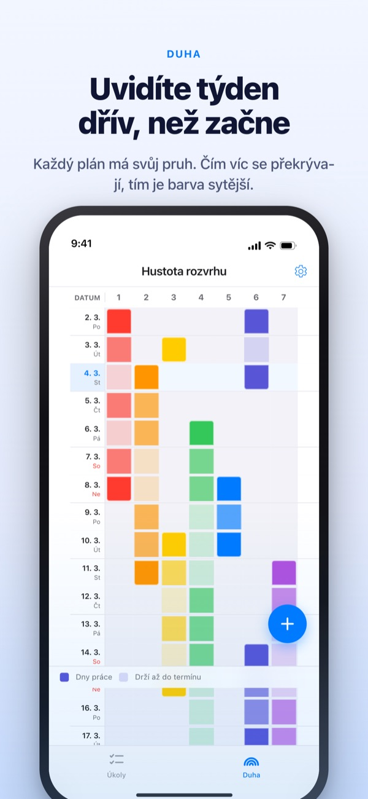
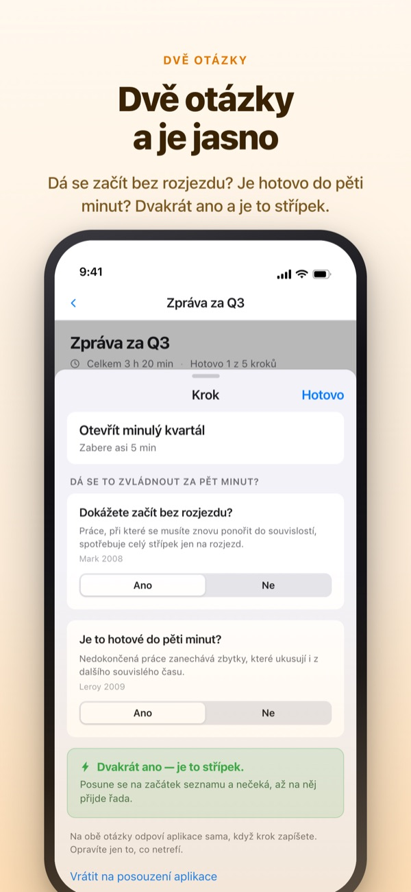
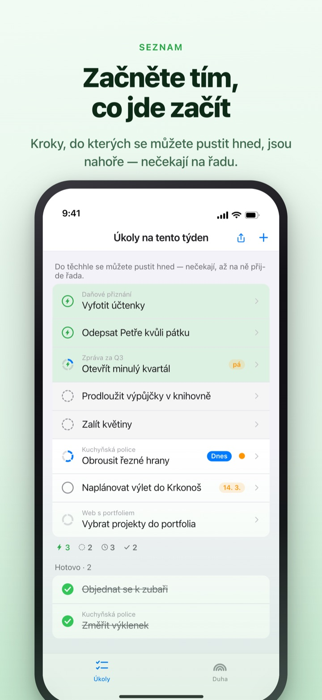
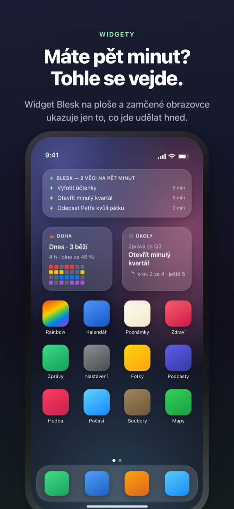

Uvidíte náročný týden předem.
Využijete volných pět minut.
Čím víc se práce překrývá, tím sytější je duha. Rozdělte velký úkol na kroky a ten, který stihnete ve volné chvíli, už čeká úplně nahoře.
Duha, dělení úkolů, časovač a synchronizace s Macem jsou zdarma.

Vyzkoušejte si to
„Zpráva za 3. čtvrtletí“ je už rozdělená do pěti kroků. Vyberte krok, změňte čas nebo otočte odpověď. Jen krok se dvěma „ano“ se stane střípkem, který zvládnete za pět minut.
Kalendář vypadá prázdně, a přesto vám týden bere dech?
Kalendář řekne, jestli je něco naplánované, ne kolik se toho na sobě vrší. Že tři termíny padly do stejného týdne, zjistíte obvykle až uprostřed něj, a volných pět minut mezitím padne na pročítání seznamu úkolů. Rainbow of Desire nakreslí týden jako mřížku, ztmaví místa, kde se věci překrývají, a odloží stranou kroky, které se vejdou do mezery.
Dvě otázky a je jasno
Když rozdělíte velký úkol, každý krok dostane dvě otázky. Dokážete začít bez rozjezdu? Je to hotové do pěti minut?
Střípek vznikne jen při dvojím ano. Aplikace odpoví první podle času a slov, vy odpověď otočíte jen tehdy, když nesedí.

Volná chvíle? Podívejte se nahoru
Přejeďte úkolem doprava, dejte mu blesk a on přeskočí frontu až nahoru. Nemusíte číst celý seznam.
Zda na sebe kroky čekají, určíte jednou pro skupinu. Popořadě ukáže první nehotový krok, Libovolně střípek, který můžete vzít hned.

Vidět i bez otevření aplikace
Časovač odpočítává do konce události a zbývající čas je vidět i v Dynamic Islandu a na zamčené obrazovce.
Widgety na plochu a zamčenou obrazovku ukazují, na čem právě jste, co se vejde do pěti minut a duhu tohoto týdne. (Widgety jsou v Pro)

Začnete ve třech krocích
- 1
Natáhněte událost
Podržte prázdné pole v den začátku a klepněte na den konce. Na duze se objeví čára.
- 2
Rozdělte velké úkoly
Klepněte na úkol, napište kroky a vyberte čas. Na dvě otázky odpoví nejdřív aplikace.
- 3
V mezeře koukněte nahoru
Střípky a úkoly s bleskem se shromáždí nahoře a nečekají na řadu.
Co uvidíte na obrazovce
- Tmavé pole · světlé pole
- dny, kdy na tom opravdu pracujete, a zbytek období do data konce
- Plný řádek
- den, kdy toho běží tolik naráz, že jedno zpoždění posune celý den
- Střípek
- ano na obě otázky; vezměte ho, když máte pět minut
- Krátký souvislý čas
- bez rozjezdu, ale do střípku se nevejde; zvládne se na jedno posezení
- Souvislý čas
- potřebuje rozjezd nebo trvá 45 minut a víc; patří do vyhrazeného času
- Blesk
- vaše vlastní značka „hned teď“; skočí nahoru
- Popořadě · Libovolně
- zda na sebe kroky čekají, nastavuje se jednou pro skupinu
- Deník získaného času
- souhrn týdne: co zbývá, získaný čas a odpočinek, odděleně a nikdy nesčítané
Čas se sčítá zdola nahoru: čas úkolu je součet jeho kroků.
Co potřebujete pro dnešek, je zdarma
Zdarma
- Duha (mřížka hustoty rozvrhu)
- Dělení úkolů na kroky a dvě otázky
- Blesk a pořadí kroků
- Časovač v Dynamic Islandu a na zamčené obrazovce
- Synchronizace s Rainbow Craft na Macu přes iCloud
- Deník za poslední dva týdny
Rainbow Plus · Rainbow Pro
- Plus: statistiky událostí a deník starší než dva týdny
- Pro: vše z Plus a k tomu widgety na plochu a zamčenou obrazovku
- Pro: import z Kalendáře a jeho stálé zobrazení
- Pro: sdílení rozvrhu jen pro čtení
- Pro: odemkne i Rainbow Craft Pro na Macu
Každé jako roční předplatné nebo jednorázový nákup napořád
Platíte jen za pohled zpět na minulé týdny a za vynášení věcí mimo aplikaci. Pokud jste si Pro koupili dřív nebo máte ještě měsíční předplatné, Pro vám zůstává.
Časté otázky
Potřebuji účet nebo iCloud?
Pokud aplikaci používáte sami, ne. Žádná registrace, vše zůstává v zařízení. Pro další zařízení, aplikaci pro Mac nebo sdílení se přihlaste k iCloudu.
Aplikace odpověděla na otázku špatně.
Klepněte na krok a přepněte Ano nebo Ne. Vaše odpověď má vždy přednost. Klepnutím na „Vrátit na posouzení aplikace“ ji aplikaci vrátíte. Krok bez času se nepočítá jako střípek, protože aplikace neví, jestli se stihne za pět minut.
Můžu něco sdílet s ostatními?
Pozvánkou můžete sdílet svůj rozvrh jen pro čtení (Pro) nebo otevřít seznam úkolů, který vy a pozvaní společně čtete a upravujete. Připojit se může kdokoli s odkazem, posílejte ho proto jen těm správným lidem. S Rodinným sdílením od Applu to nesouvisí.
Zobrazí se události z Kalendáře?
Události z vybraných kalendářů se ukážou na duze a v denním zobrazení (Pro). Aplikace je jen čte a nic do nich nezapisuje.
Můžu úkoly odškrtávat ve widgetu?
Widgety slouží jen k náhledu. Klepněte na widget, otevřou se úkoly a odškrtněte je tam.
Kupuje se aplikace pro Mac zvlášť?
Rainbow Craft je samostatná aplikace pro macOS v Mac App Storu. Se stejným účtem iCloud se úkoly a týdenní plány synchronizují samy a nic to nestojí.
Zůstaly mi starší úkoly?
Ano. Úkoly, kroky i nastavené časy zůstávají. Štítky starých podmínek pro začátek aplikace znovu posoudí dvěma otázkami.
Kde se ukládají moje data?
Žádný server není. Vše je ve vašem zařízení a ve vašem soukromém iCloudu, kam vývojář nevidí. Bez reklamního identifikátoru a polohy. Aplikace posílá jen anonymní statistiky používání, podle kterých vás nikdo nepozná, a v Nastavení je lze vypnout.
Jak zruším předplatné?
V Nastavení > Účet Apple > Předplatné. Pokud ho nezrušíte nejpozději 24 hodin před koncem období, obnoví se za stejnou cenu. Nákup napořád se platí jednou.
Zasekli jste se nebo něco nesedí? Napište na leeo@kakao.com. Kontakt najdete i v nastavení aplikace.